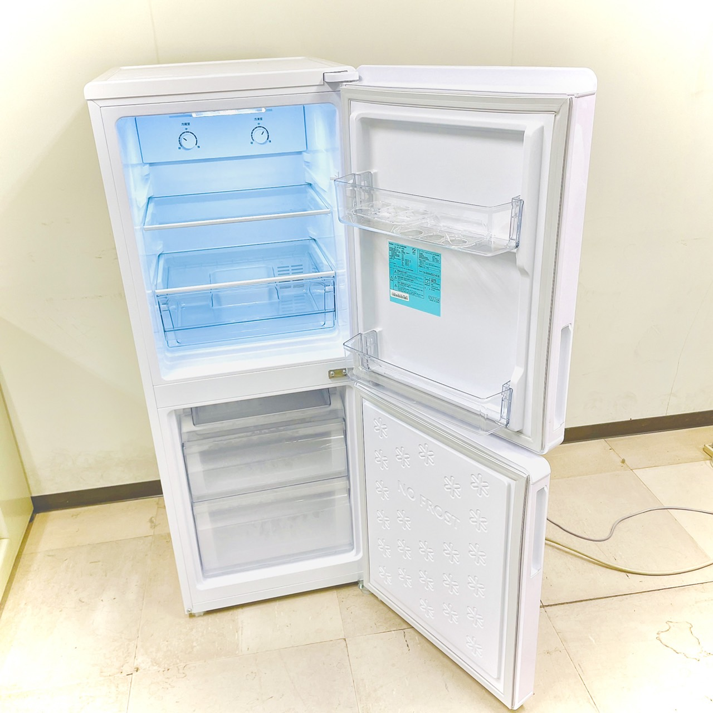
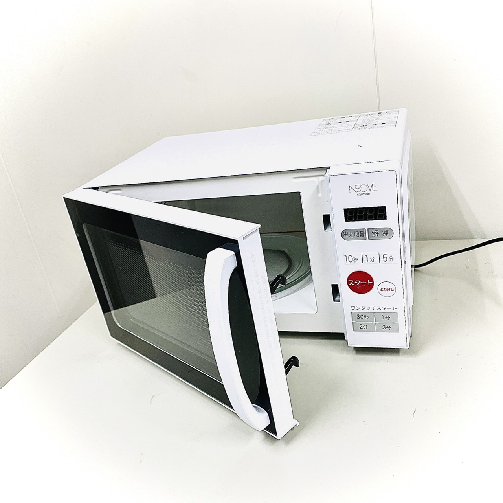
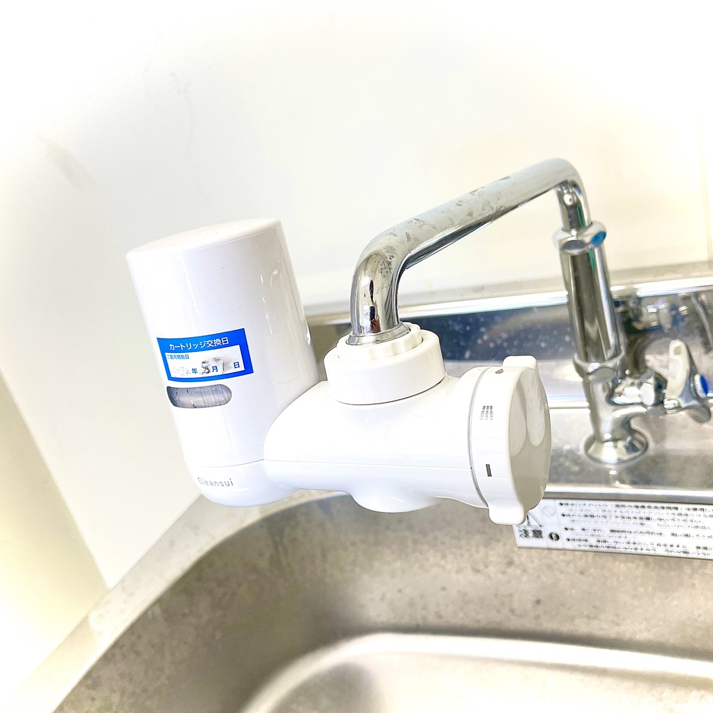
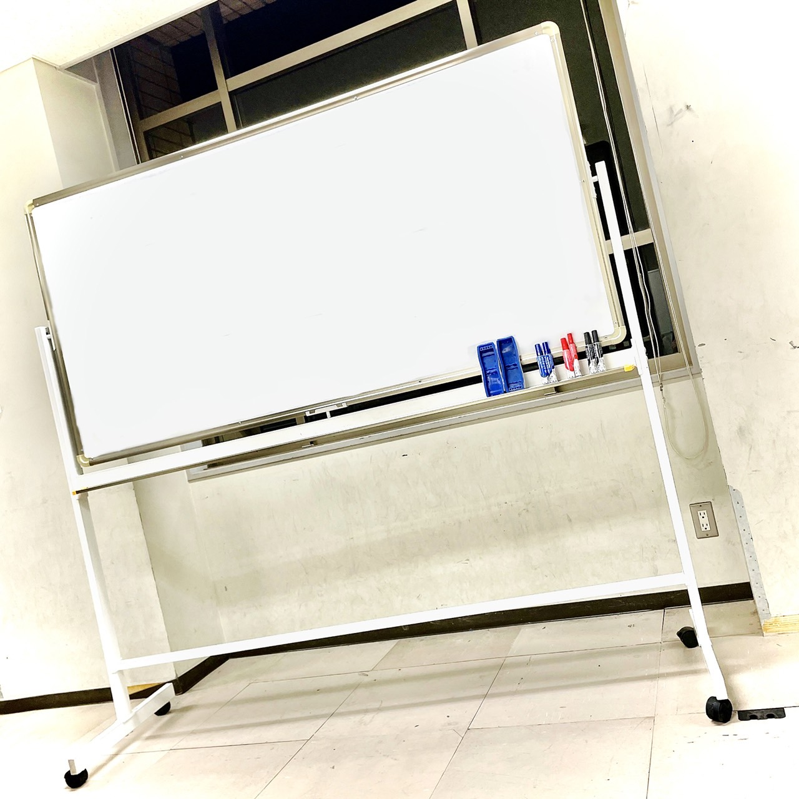
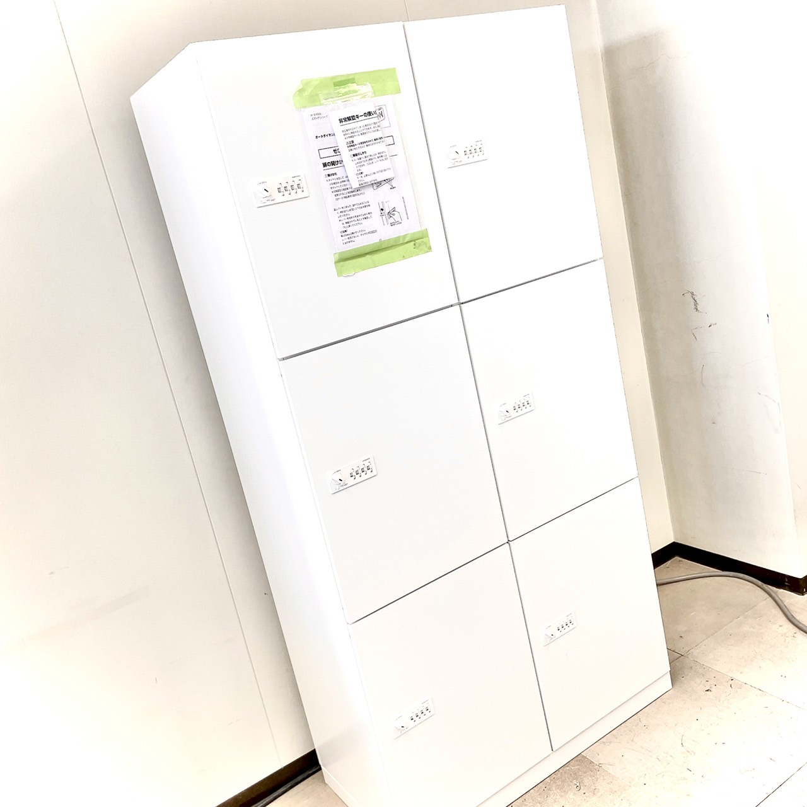
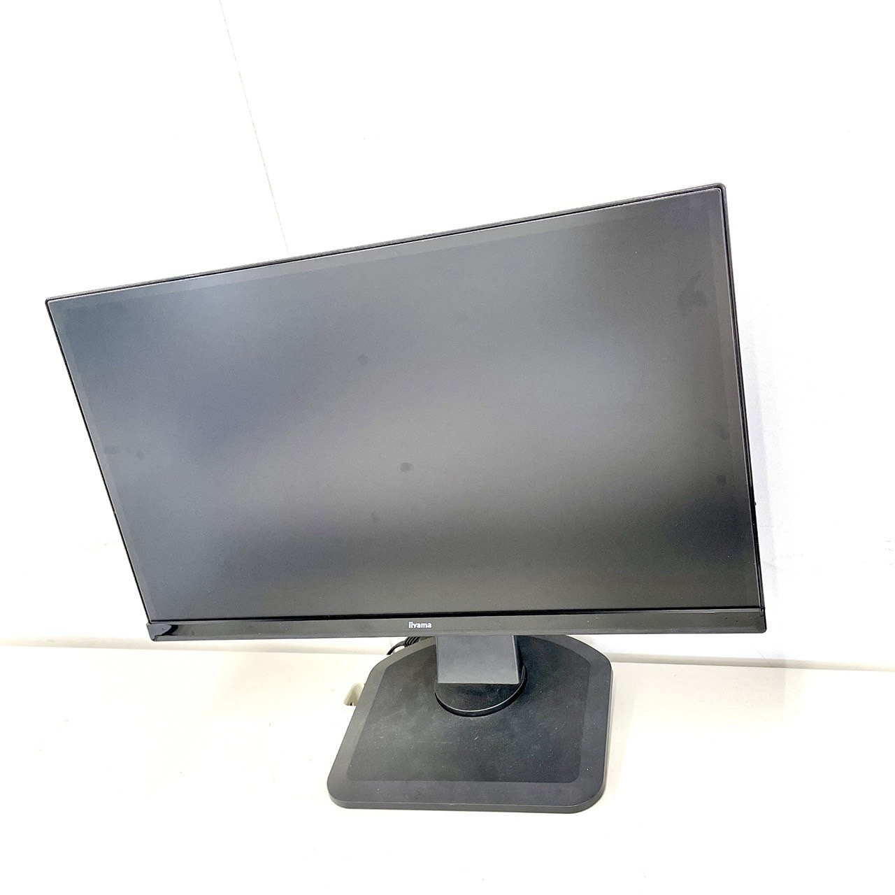

設備について
equipment
-

- 冷蔵庫
- 横幅約50cmのコンパクトボディを持つ右開きの2ドア冷蔵庫（148L）。冷凍室内の食材が見やすくて取り出しやすい「区っ切り棚冷凍室」により、大きなものもたくさん保存できる。電子レンジが載せられる耐熱性能天板を備えている。重いものを載せてもたわまない「強化ガラストレイ」と、保存食品のサイズに合わせて調整できる「高さ調節可能トレイ」がある。
JR-NF148B
-

- 電子レンジ
- よく使うワット数＆時間の「ワンタッチスタート」搭載しています。少ない操作で使えるシンプルなデザインが特徴です。出力を3段階に変えられるので、レトルト食品の温め表記時間に合わせるのに便利です。
NGM720B
-

- 浄水器
- 1業界トップクラスの浄水能力でカートリッジは3ヶ月使えます。便利な3段切り替えダイヤルカートリッジには、汚れがひと目でわかるチェックウィンドーを使っているため、非常に便利です。
MD111
-

- ホワイトボードとペン
- 角部屋には大きなホワイトボードが6台と黒板が1台あり、自由に使えます。ホワイトボードに使えるペンには赤、青、黒の3種類があり無くなった場合には管理人に言ってもらえれば新品を購入してもらえます。
ホワイトボードとペン
-

- ロッカー
- コクヨ製エディアシリーズの6人用のオートダイヤル錠タイプのロッカーです。清潔感のあるホワイト色が特徴で配線用ダクトがあるのでコンセントタップ等を各庫内へ設置しておくことで、PC等の充電が簡単に行えます。
R31095
-

- モニター
- 角部屋のモニターはBenQ、iiyamaなどの機械を取り扱っています。自分の持っているパソコンに合わせたケーブルを使うことでモニターを使うことができます。ケーブルに関しては、もしかした管理人が買ってくれるかもしれないので気軽に相談してみてくださいね。
デスクトップ
-

- iMac
- Appleの高い製品です。パスワードを管理人から教えてもらえれば、自分のアカウントなどを作ることができます。ぜひ使ってみてください。
iMac
-
- CO₂を測る機械
- CO₂が1000PPMを越えるとアラームを鳴らして教えてくれる機械です。
CO₂を測る機械
-
- PM2.5を測る機械
- PM2.5がある程度の濃度を越えるとアラームを鳴らして教えてくれる機械です。
PM2.5を測る機械
-
- ACK70X-W
- この画像はストリーマ空気清浄機です。プラズマ放電の一種であるストリーマが、有害物質を分解します。また、PM2.5への対応やスマートフォンと接続できることが特徴です。
ACK70X-W
-
- コピー機
- このコピー機では、印刷はもちろんのことスキャナーの機能も持ち合わせており、お手持ちの携帯のアプリでデータを送信したり受信したりすることができます。アプリに関しては管理人に何をインストールしたらいいのかを尋ねてみてください。
MFC-L8610CDW